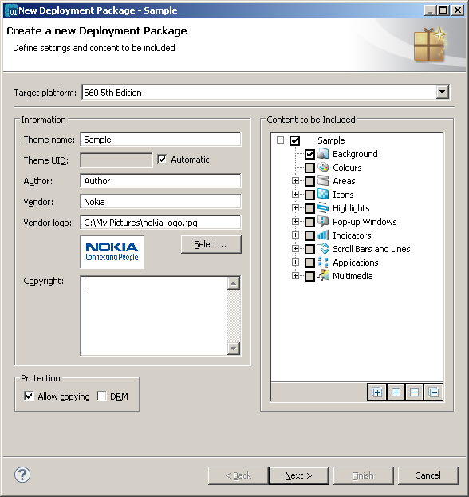

Packaging Theme
Creating
sis-package
Select
Tools -> Create New
SIS-Package. The Create a new
deployment package wizard opens.

Note:
Before the packaging
wizard opens, a Saving confirmation window appears if you have not
checked the "Save without a prompt before starting packaging process" option
in the Carbide.ui Preferences. To save without the prompt in the
future, check the "Always save without prompt" box in the Saving
confirmation window. You can change this preference in the Carbide.ui
Preferences, too.
- Target platform
drop-down
list, select the platform for which the theme is created.
( Note : Selecting different
target platform may cause problems in packaging!)
- In the Information
field:
- In the Theme name
field, enter a name for the theme.
- In the Theme UID
field:
- If you want the system to
automatically generate a UID
for your theme, check the box
next to Automatic.
- Enter the UID,
if you
want to enter your own UID
for
the theme.
Note:
If you enter a UID
that already exists as a theme,
the old theme will be overwritten in the phone when deploying. The
format for the UID
is
hexadecimal, from 0x00000000 to
0x7FFFFFFF (this is the
protected range) and 0x80000000 to
0xFFFFFFFF
(this is
the unprotected range). The protected range requires that you have a
valid certificate stored on your computer. For more information about
UIDs and certificates, see Symbian Developer Library.
- In the Author and
Copyright
fields, enter the author
of the package and a copyright notice for the package.
- In the Vendor
field,
enter the vendor name and if you have a vendor logo , click on the Select
button to add a logo
- In the Protection
field,
select protection settings for the package:
- If you do not want others to
be able to copy your package, unmark
the Allow
copying checkbox.
- If you want your package to
be Digital
Rights Management (DRM)
protected, mark the DRM
checkbox.
- In the Content
to be
included field, unmark the checkboxes next to the content you do not
want to include in the package.
Note:
The system displays the
checkbox as marked in all those theme component areas that have been
edited. For example, if you have only edited the background of the
default theme, the checkbox next to Background is marked. So if you
want to include all the edited content in your theme for the
sis-package, you can just move to the next step, knowing that the
system automatically includes all the edited theme components in the
sis-package.
- Click Next.
- In the Package Signing
field, decide if you want to sign your deployment package:
- If you do not want to sign
the package, click the No signing
radio-button.
- To sign you deployment
package, click the Sign by
radio-button.
- If you chose to sign your
package:
- Click Modify
and browse
to a key pair or approve the default key pair.
- Enter the password for
your key pair.
- Click Next.
- Select a destination for
your package.
- If you want to change the
package destination, click Browse to
select a new destination.
- Click Finish.
The package is created. You see a notification when the package has
been successfully created. The package is a .sis file and visible in
the Navigator
view.